ContenidoEn esta guía
- 01Recorrido generalroles, navegación y menú
- 02Panelel estado de todo, de un vistazo
- 03Clientes y serviciosCUITs, certificados y servicios de ARCA
- 04Emitir y comprobantesfacturar, el PDF con QR y el historial
- 05Facturador masivolotes de comprobantes
- 06Contingenciacuando ARCA no responde
- 07Mis Comprobantesemitidos y recibidos desde el portal
- 08Análisisfacturación, compras e IVA
- 09Facturas recibidaslectura y control con Factorum
- 10IntegracionesAPI REST, n8n, webhooks y MCP
- 11Usuarios y claves de APIacceso y permisos
- 12Glosariolos términos de ARCA, en limpio
01Recorrido general
Arcanum se usa desde el navegador. A la izquierda, las secciones; arriba a la derecha, el menú de tres puntos con todo lo demás.
Roles
Lo que ve y puede hacer cada persona depende de su rol. Además, un usuario o una clave de API puede quedar limitado a algunos CUITs.
| Rol | Puede |
|---|---|
| superadmin | Todo: usuarios, catálogo de servicios, conexiones con Fisherboy y Factorum, backups. |
| admin | Operar todos los CUITs, claves de API, webhooks, clave fiscal de Mis Comprobantes, entorno de ARCA. |
| operador | Emitir, cargar clientes y certificados, sincronizar y constatar en sus CUITs. |
| lectura | Consultar. No emite ni modifica nada. |
El menú
En el menú de tres puntos están el usuario y su rol, el tema claro u oscuro, el entorno de ARCA (admin), los ajustes de superadmin, Cambiar contraseña, Novedades con lo que trajo cada versión, Acerca de Arcanum con la versión instalada y Cerrar sesión. Cerrar sesión invalida la sesión en el servidor.
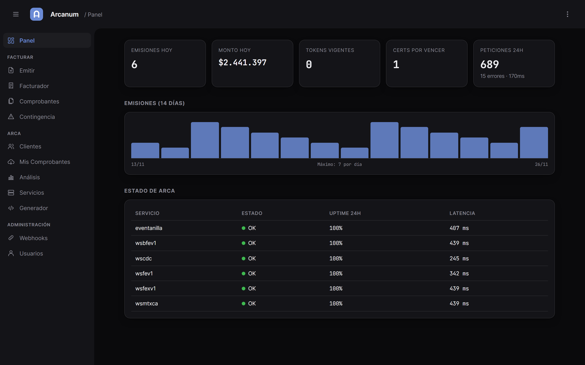
02Panel
La primera pantalla resume el estado de la instalación.

- Emisiones de hoy y monto: lo emitido por Arcanum en el entorno actual.
- Tickets vigentes y certificados por vencer: los certificados vencen; Arcanum avisa 30 días antes.
- Peticiones de las últimas 24 horas: volumen, errores y latencia.
- Estado de ARCA: cada servicio se controla cada 5 minutos, con su disponibilidad de las últimas 24 horas.
03Clientes y servicios
Cada contribuyente que opera con Arcanum es un cliente, con su certificado digital. Cada servicio de ARCA se habilita aparte.
Clientes
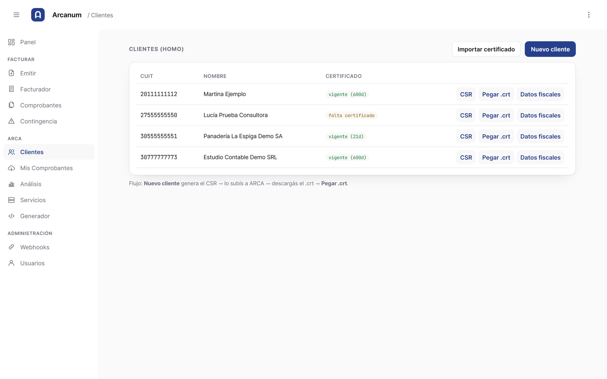
- Nuevo cliente: genera la clave privada (cifrada, nunca sale) y el pedido de certificado (CSR).
- Pegar .crt: carga el certificado que devolvió ARCA; Arcanum verifica que corresponda a la clave.
- Importar certificado: trae un par de clave y certificado que ya tengas.
- Datos fiscales: razón social, domicilio, condición frente al IVA e ingresos brutos para el PDF. Se pueden traer del padrón de ARCA.
Servicios
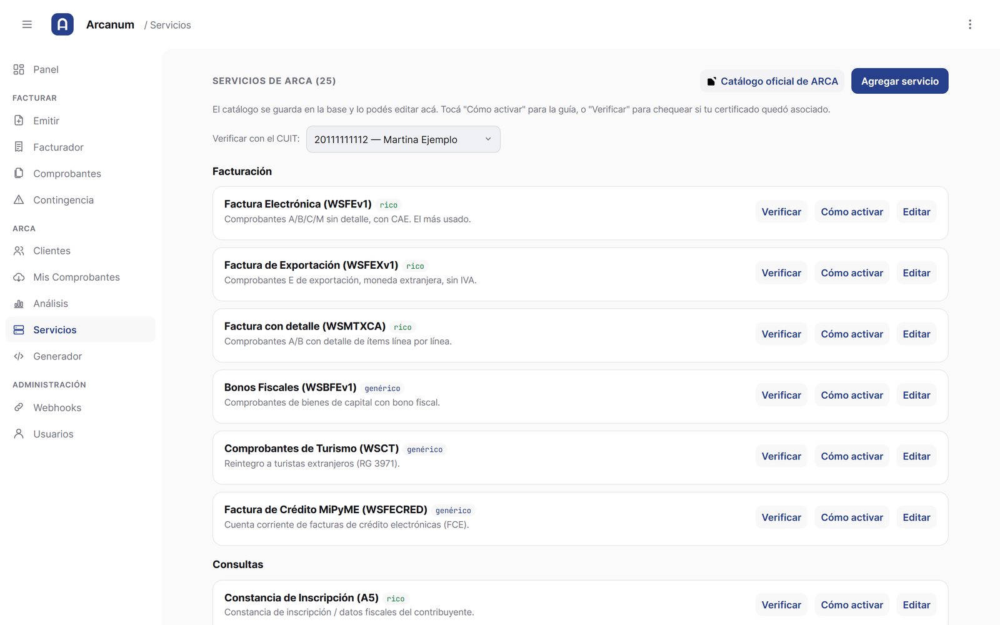
Cada servicio muestra qué hace, cómo activarlo en el Administrador de Relaciones y un botón Verificar que confirma si tu certificado ya lo tiene asociado. El catálogo lo edita solo un superadmin, y sus direcciones solo pueden ser de ARCA.
04Emitir y comprobantes
Facturar desde el panel o desde la API, con vista previa, sin duplicados y con el PDF listo.
Emitir
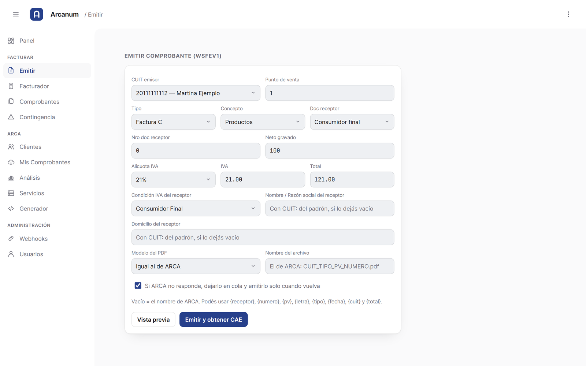
- Elegí el CUIT emisor, el punto de venta y el tipo de comprobante.
- Cargá el receptor (con el CUIT, Arcanum completa los datos del padrón) y los importes.
- Usá Vista previa: ARCA valida el comprobante sin emitirlo y Arcanum avisa los problemas antes de pedir el CAE.
- Emitir. Si ARCA no responde y tildaste contingencia, el comprobante queda en cola y sale solo cuando vuelve.
Comprobantes
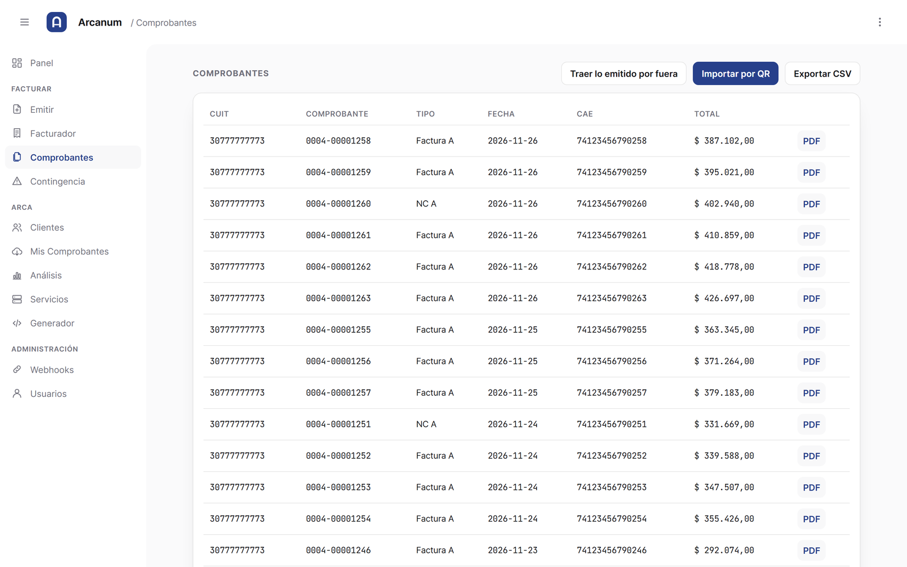
- PDF con QR de ARCA, en el modelo oficial o el de la empresa.
- CSV para el libro de IVA.
- Traer lo emitido por fuera: suma lo facturado desde la web de ARCA u otro sistema y avisa si algo no coincide.
- Importar por QR: registra un comprobante de un tercero solo si ARCA lo constata.
05Facturador masivo
Para emitir o pedir muchos comprobantes juntos: honorarios del mes, cuotas, alquileres.
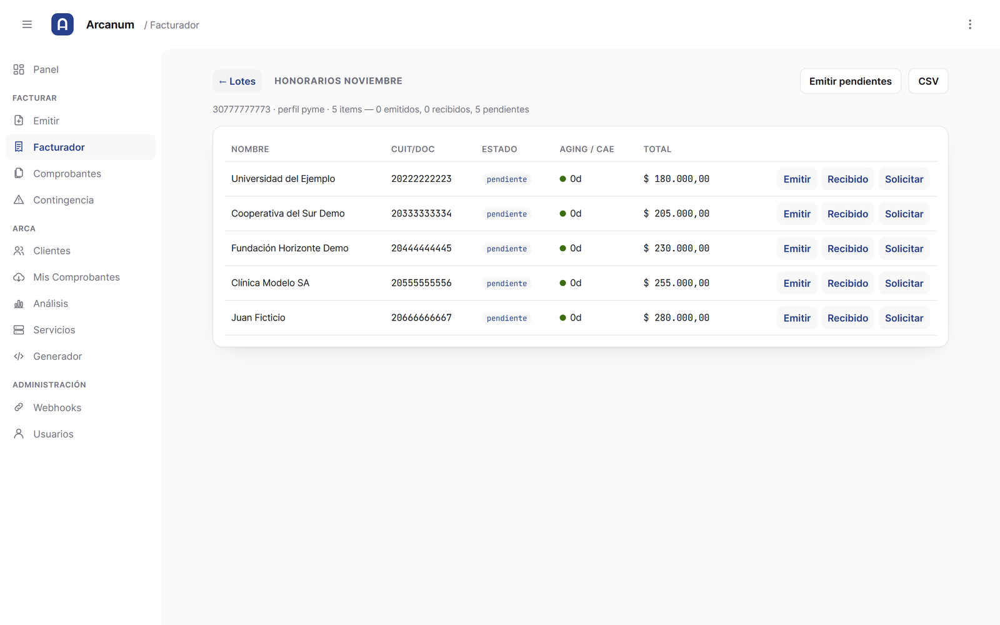
- Nuevo lote: elegí el CUIT y el perfil, y cargá los ítems a mano o con un CSV.
- Emitir pendientes pide el CAE de todos los ítems que falten, de a uno y sin duplicar.
- Si el comprobante lo emite otro (un profesional que te factura), Solicitar le manda un correo (una vez por día) y Recibido registra su CAE.
- El semáforo marca los ítems que llevan demasiados días pendientes. El lote se exporta a CSV.
06Contingencia
ARCA a veces no responde. Arcanum hace que la facturación no se corte y que nada salga dos veces.
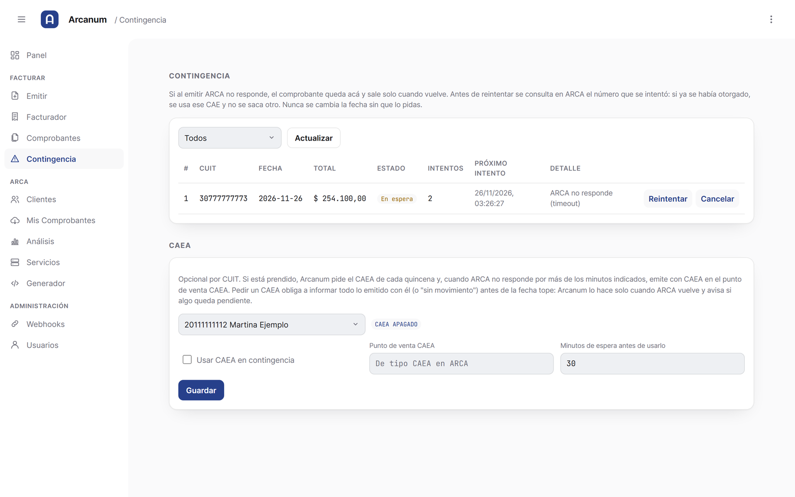
- Cola: un comprobante emitido con contingencia que no pudo salir queda en espera y se reintenta solo, con espera creciente, y en el acto cuando ARCA vuelve.
- Adopción del CAE: si el pedido llegó a ARCA pero la respuesta se perdió, antes de reintentar Arcanum consulta ese número y, si ARCA lo había autorizado, adopta ese CAE.
- Fecha: nunca cambia sola. Si ARCA ya no acepta la fecha original, el comprobante espera tu decisión: emitir con la fecha de hoy o cancelar.
- CAEA (opcional por CUIT): con un punto de venta de tipo CAEA, si ARCA sigue caído pasado el tiempo que elijas, emite con CAEA e informa todo cuando vuelve.
07Mis Comprobantes
Los emitidos y recibidos que ARCA registra a tu nombre, bajados del portal todos los días. Requiere Fisherboy.
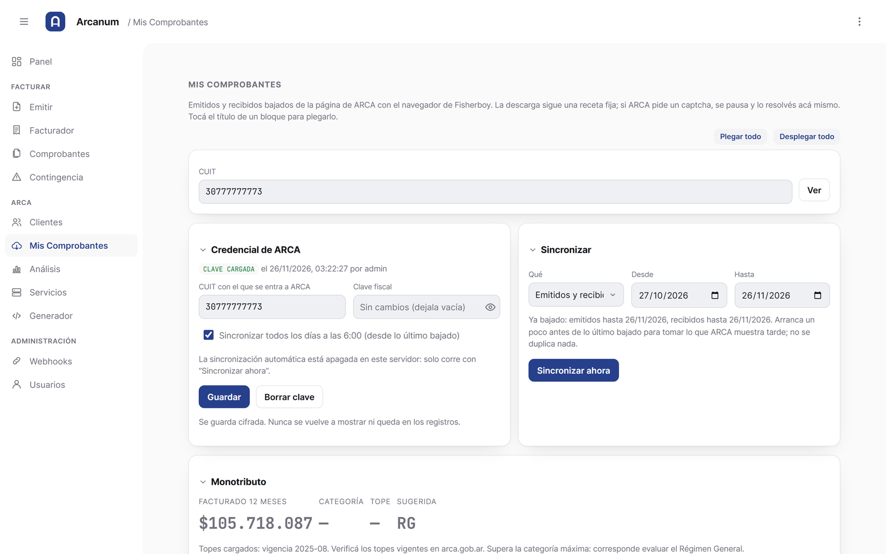
Configurar
- Un admin carga la clave fiscal del CUIT. Se guarda cifrada, no vuelve por la API ni queda en registros.
- Con Sincronizar ahora se bajan emitidos, recibidos o ambos (hasta 3 años por vez). Con la sincronización diaria tildada, se actualiza sola.
- Si ARCA pide un captcha o un segundo factor, la vista en vivo muestra el navegador y una persona lo resuelve. Una sincronización en curso se puede Cancelar.
Constatar lo que te facturan
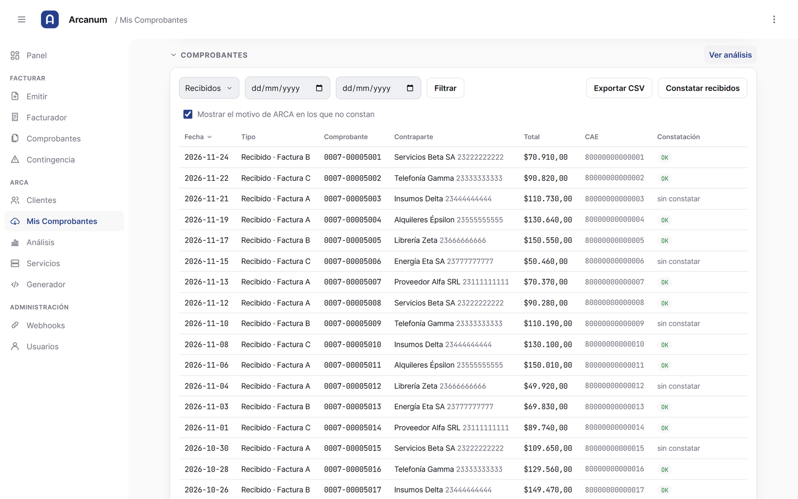
Constatar recibidos controla cada comprobante recibido contra ARCA y su emisor contra la base de apócrifos, en segundo plano. Se puede detener: lo constatado queda y la próxima vez sigue desde lo pendiente.
Monotributo
Para monotributistas, Arcanum suma los últimos 12 meses de emitidos (con las notas de crédito restando) contra el tope de la categoría, con semáforo al 80% y al 100%, la categoría sugerida y el recordatorio de recategorización en enero y julio. Los topes se cargan con su vigencia, también con una plantilla CSV.
08Análisis
Los datos de Mis Comprobantes, convertidos en números que se entienden.
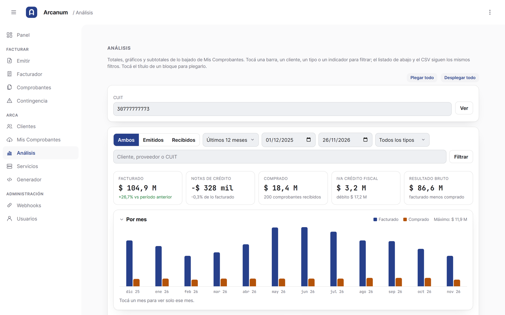
- Indicadores del período: facturado (con las notas de crédito restadas) y su variación contra el período anterior, compras, IVA débito y crédito, y el resultado.
- Por mes: emitidos y recibidos lado a lado.
- Principales clientes y proveedores, con la concentración de cada uno.
- Un clic filtra todo: un mes, un cliente o un tipo de comprobante filtra el resto de la pantalla y el listado.
- Cada bloque se pliega, y Arcanum recuerda cuáles dejaste plegados.
09Facturas recibidas
Con Factorum conectado, Arcanum lee y controla las facturas que recibís en PDF o imagen.
- Verificar una factura: subís el archivo y en segundos sabés si es válida, con los controles y la constatación con ARCA.
- Lotes: subís muchas a la vez; Factorum las lee (QR, texto, OCR e IA opcional) y quedan para revisar.
- Revisar y aprobar lo leído, corregir un campo y bajar el Excel o el CSV.
10Integraciones
Todo lo que hace el panel también se hace por API. Así Arcanum se conecta con n8n, un ERP o un asistente de IA.
API REST
Cada pedido lleva una clave de API en X-API-Key o en Authorization: Bearer. Ejemplo, emitir una factura C:
curl -X POST https://arcanum.tuempresa.com/api/wsfev1/comprobantes \ -H "X-API-Key: TU_CLAVE" -H "Content-Type: application/json" \ -d '{ "cuit": "30777777773", "puntoVenta": 4, "tipoComprobante": 11, "importeTotal": 254100, "idempotencyKey": "venta-0042" }'
Y cualquier operación de cualquier servicio del catálogo, con el motor genérico:
curl -X POST https://arcanum.tuempresa.com/api/ws/padron_a5/getPersona_v2 \ -H "X-API-Key: TU_CLAVE" -H "Content-Type: application/json" \ -d '{ "cuit": "30777777773", "params": { "idPersona": "20111111112" } }'
La documentación interactiva de la API está en /docs.
Generador y n8n
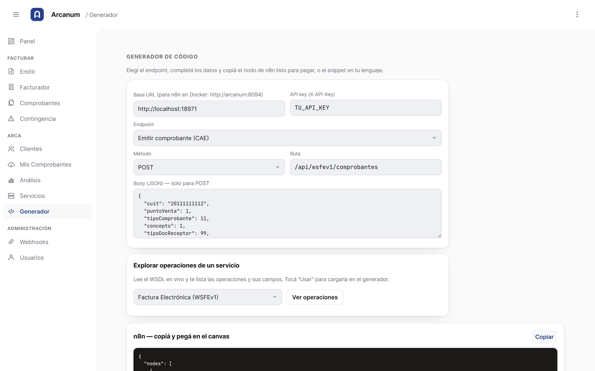
Elegís el servicio y la operación (Arcanum lee el WSDL de ARCA en vivo y lista los campos) y el generador entrega el nodo HTTP de n8n listo para pegar, más los ejemplos en cURL, JavaScript y Python.
Webhooks
Arcanum avisa por HTTP (firmado con HMAC en X-Arcanum-Signature) y, si configurás SMTP, por correo:
| Evento | Cuándo |
|---|---|
comprobante_emitido / _rechazado | Cada emisión. |
arca_caido / arca_restablecido | Un servicio de ARCA deja de responder o vuelve. |
cert_por_vencer, clave_por_vencer | Un certificado o una clave de API vence pronto. |
clave_anomala | Una clave consulta muchos CUITs o acumula rechazos. |
tope_monotributo | Un monotributista pasa el 80% o el 100% de su categoría. |
comprobante_encolado, cola_requiere_humano | Contingencia. |
mis_comprobantes_sincronizado / _fallo | Sincronizaciones de Mis Comprobantes. |
backup_creado / backup_fallo | Backup diario. |
conexion_cambiada, catalogo_cambiado | Cambios de configuración sensibles. |
Asistentes de IA (MCP)
En POST /mcp, un asistente compatible con MCP consulta padrón y riesgo fiscal, comprobantes, numeración, puntos de venta, e-Ventanilla, certificados, el estado de ARCA y Mis Comprobantes, y prepara una vista previa. Todas las herramientas son de solo consulta: para facturar, el asistente propone y una persona aprueba.
11Usuarios y claves de API
Quién entra al panel y qué sistemas usan la API, cada uno con lo mínimo que necesita.
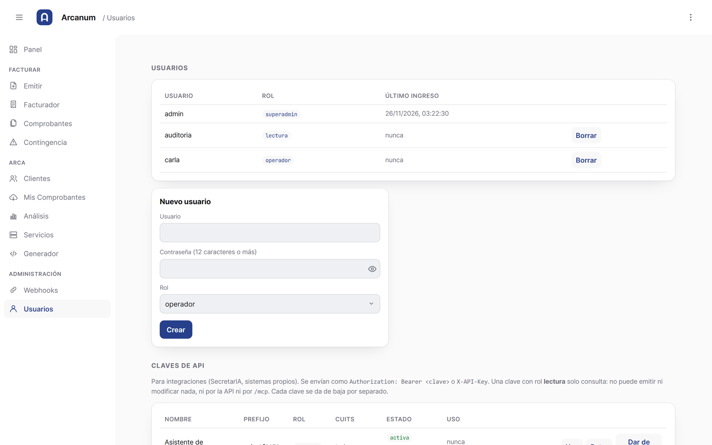
Usuarios
- Contraseñas de 12 caracteres o más. Cada persona la cambia desde el menú; al hacerlo se cierran sus otras sesiones.
- Un superadmin crea y borra usuarios; las sesiones del usuario borrado se cortan al instante.
- Con Lockatus, el ingreso es único y el rol viene de Lockatus.
Claves de API
- Rol (
lectura,operadoroadmin) y CUITs permitidos: una integración ve solo lo suyo. - Vencimiento y rotación con días de gracia, para cambiar la clave sin cortar el servicio.
- Límite por minuto y Uso: pedidos, errores, CUITs consultados y últimos pedidos.
- Dar de baja corta la clave al instante, sin tocar las demás.
12Glosario
| Término | Qué es |
|---|---|
| ARCA | Agencia de Recaudación y Control Aduanero, ex AFIP. |
| CAE | Código de Autorización Electrónico: el número que ARCA asigna a cada comprobante autorizado. |
| CAEA | CAE anticipado: un código por quincena para emitir cuando ARCA no responde, con obligación de informar después. |
| CUIT | Clave Única de Identificación Tributaria del contribuyente. |
| Certificado digital | Identifica al sistema ante ARCA. Se genera con un CSR y se asocia a cada servicio. |
| WSAA | El servicio de autenticación de ARCA: entrega un ticket de acceso (token y firma) válido por 12 horas. |
| Homologación | El entorno de pruebas de ARCA. Los comprobantes no tienen validez fiscal. |
| Punto de venta | La numeración de comprobantes; cada tipo de emisión (CAE, CAEA) tiene los suyos. |
| Constatación | Verificar ante ARCA que un comprobante existe y sus datos coinciden. |
| Idempotencia | Que repetir un pedido no cambie el resultado: un reintento no emite dos veces. |
| Mis Comprobantes | El servicio del portal de ARCA con todos los comprobantes emitidos y recibidos por un CUIT. |
Arcanum
Gateway REST self-hosted para los Web Services de ARCA.
Open source, licencia MIT. Parte del Ecosistema Escriba.
github.com/diegoparras/arcanum
Arcanum es un proyecto independiente, sin relación con ARCA. Los datos de las capturas son ficticios.